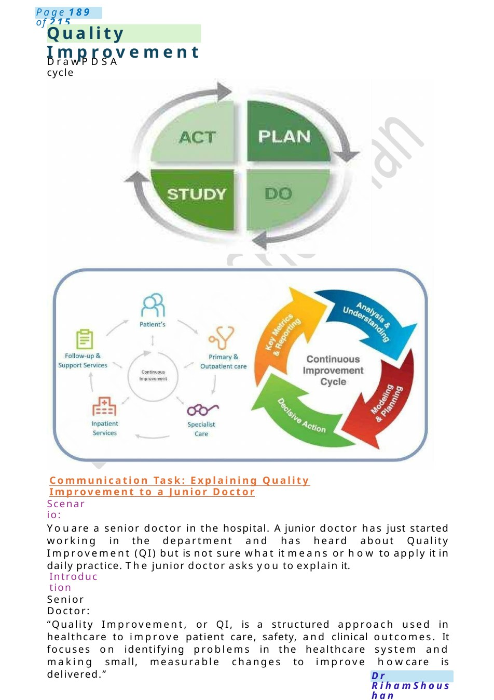
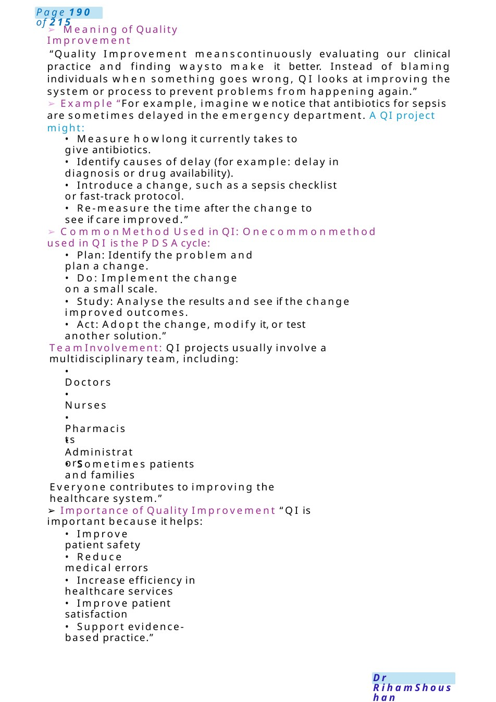
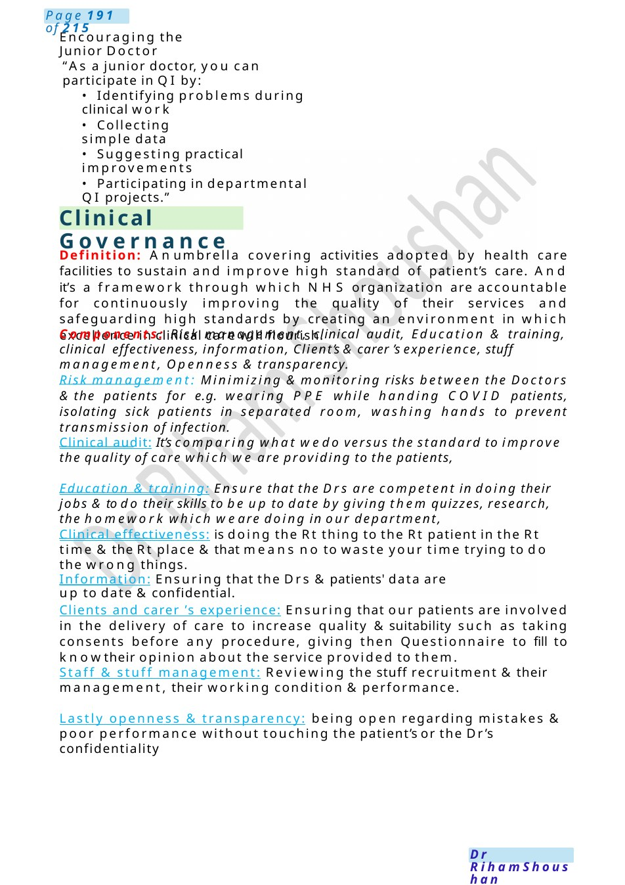

Quality Improvement
Communication Task: Explaining Quality Improvement to a Junior Doctor Youare a senior doctor in the hospital. Ajunior doctor has just started working in the department and has heard about Quality Improvement (QI) but is not sure what it means or how to apply it in daily practice. The junior doctor asks you to explain it.
Scenario Summary
Communication Task: Explaining Quality Improvement to a Junior Doctor Youare a senior doctor in the hospital. Ajunior doctor has just started working in the department and has heard about Quality Improvement (QI) but is not sure what it means or how to apply it in daily practice. The junior doctor asks you to explain it.
Full Original Scenario

Quality Improvement
DrawPDSAcycle
Communication Task: Explaining Quality Improvement to a Junior Doctor
Scenario:
Youare a senior doctor in the hospital. Ajunior doctor has just started working in the department and has heard about Quality Improvement (QI) but is not sure what it means or how to apply it in daily practice. The junior doctor asks you to explain it.
Introduction
Senior Doctor:
“Quality Improvement, or QI, is a structured approach used in healthcare to improve patient care, safety, and clinical outcomes. It focuses on identifying problems in the healthcare system and making small, measurable changes to improve howcare is delivered.”

- Meaning of Quality Improvement
“Quality Improvement meanscontinuously evaluating our clinical practice and finding waysto make it better. Instead of blaming individuals when something goes wrong, QI looks at improving the system or process to prevent problems from happening again.”
- Example “For example, imagine wenotice that antibiotics for sepsis are sometimes delayed in the emergency department. AQI project might:
- Measure howlong it currently takes to give antibiotics.
- Identify causes of delay (for example: delay in diagnosis or drug availability).
- Introduce a change, such as a sepsis checklist or fast-track protocol.
- Re-measure the time after the change to see if care improved.”
- Common Method Used in QI: Onecommonmethod used in QI is the PDSAcycle:
- Plan: Identify the problem and plan a change.
- Do: Implement the change on a small scale.
- Study: Analyse the results and see if the change improved outcomes.
- Act: Adopt the change, modify it, or test another solution.”
Team Involvement: QI projects usually involve a multidisciplinary team, including:
- Doctors
- Nurses
- Pharmacists
- Administrators
- Sometimes patients and families
Everyone contributes to improving the healthcare system.”
- Importance of Quality Improvement “QI is important because it helps:
- Improve patient safety
- Reduce medical errors
- Increase efficiency in healthcare services
- Improve patient satisfaction
- Support evidence-based practice.”

Clinical Governance
Encouraging the Junior Doctor
“As a junior doctor, you can participate in QI by:
- Identifying problems during clinical work
- Collecting simple data
- Suggesting practical improvements
- Participating in departmental QI projects.”
Definition: Anumbrella covering activities adopted by health care facilities to sustain and improve high standard of patient’s care. And it’s a framework through which NHS organization are accountable for continuously improving the quality of their services and safeguarding high standards by creating an environment in which excellence in clinical care will flourish.
Components: Risk management, clinical audit, Education & training, clinical effectiveness, information, Client’s &carer ’s experience, stuff management, Openness &transparency.
Risk management: Minimizing &monitoring risks between the Doctors &the patients for e.g. wearing PPE while handing COVID patients, isolating sick patients in separated room, washing hands to prevent transmission of infection.
Clinical audit: It’s comparing what wedo versus the standard to improve the quality of care which we are providing to the patients,
Education & training: Ensure that the Drs are competent in doing their jobs &to do their skills to be up to date by giving them quizzes, research, the homework which we are doing in our department,
Clinical effectiveness: is doing the Rt thing to the Rt patient in the Rt time &the Rt place &that means no to waste your time trying to do the wrong things.
Information: Ensuring that the Drs &patients' data are up to date &confidential.
Clients and carer ’s experience: Ensuring that our patients are involved in the delivery of care to increase quality &suitability such as taking consents before any procedure, giving then Questionnaire to fill to knowtheir opinion about the service provided to them.
Staff & stuff management: Reviewing the stuff recruitment &their management, their working condition &performance.
Lastly openness & transparency: being open regarding mistakes & poor performance without touching the patient’s or the Dr’s confidentiality